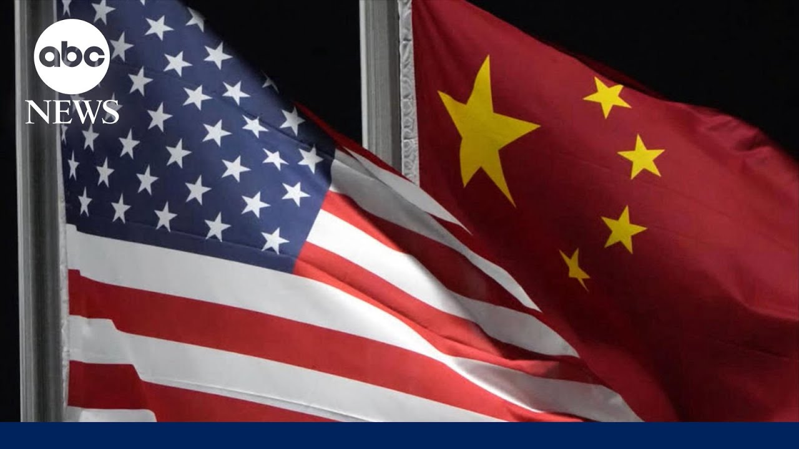

【美国和中国举行关税谈判】
Summary: High-level US-China tariff negotiations begin in Switzerland amid global economic concerns, with Trump open to adjusting tariffs but downplaying expectations.
摘要： 美中高层关税谈判在瑞士启动，引发全球经济关注，特朗普表示愿调整关税但降低预期。

⏱️ Estimated Reading Time: 3 min
Now to a potential breakthrough in the US China trade war.
现在来看美中贸易战可能的突破。
Treasury Secretary Scott Besson today meeting in Switzerland with top Chinese officials.
财政部长斯科特·贝森今天在瑞士与中国高级官员会面。
The first formal in-person talks between the two sides since President Trump slapped 145% tariffs on China.
这是自特朗普总统对中国征收145%关税以来双方首次正式面对面会谈。
But the White House tonight trying to lower expectations.
但白宫今晚试图降低期望。
Here's ABC's senior White House correspondent Selena Wang.
以下是ABC高级白宫记者塞莱娜·王的报道。
Tonight, highstakes negotiations underway between the US and China that could decide the fate of the global economy.
今晚，美中之间正在进行可能决定全球经济命运的高风险谈判。
I think we're going to come back with a fair deal for both China and US.
我认为我们将达成对中美双方都公平的协议。
The first meeting since President Trump imposed staggering 145% tariffs on China, dramatically reducing trade between the world's largest economies, causing slowdowns at vital US shipping hubs.
这是特朗普总统对中国征收惊人的145%关税后的首次会晤，大幅减少了全球两大经济体之间的贸易，导致美国重要航运枢纽放缓。
The number of cargo ships at the port of Los Angeles down 32%.
洛杉矶港的货船数量下降了32%。
Retailers and large importers are telling me directly that they've all but stopped imports from China.
零售商和大进口商直接告诉我，他们几乎停止从中国进口。
Trump pressed on the thousands of dock workers and truck drivers worried about their jobs due to the slowing traffic.
特朗普被问及数千名因交通放缓而担心工作的码头工人和卡车司机。
That means we lose less money.
这意味着我们损失更少。
When you say it slowed down, that's that's a good thing, not a bad thing.
当你说它放缓时，那是好事，不是坏事。
China had previously demanded Trump first remove the tariffs before coming to the negotiating table before the US China trade talks began.
中国此前要求特朗普在美中贸易谈判开始前先取消关税。
The president suggesting he'd be open to lowering his tariffs.
总统暗示他愿意降低关税。
Writing on social media, "80% tariff on China seems right."
他在社交媒体上写道：“对中国征收80%的关税似乎合适。”
Trump asked if he'll be disappointed if his team comes back without a deal.
特朗普被问及如果他的团队空手而归是否会失望。
No, not at all.
不，一点也不。
Because we already made a great deal.
因为我们已经达成了很棒的协议。
We're not doing business with China right now.
我们现在没有与中国做生意。
And with the president is headed to the Middle East on Monday for the first major foreign trip of his second term, stopping in Saudi Arabia, the United Arab Emirates, and Qatar.
总统将于周一前往中东，这是他第二任期的首次重大外访，将访问沙特阿拉伯、阿联酋和卡塔尔。
The region has played a critical role in mediating conflicts around the world.
该地区在调解全球冲突方面发挥了关键作用。
This trip also comes as the US starts another round of nuclear talks with Iran.
此次访问正值美国与伊朗开始新一轮核谈判之际。
Whit Selena Wang at the White House tonight.
今晚白宫的塞莱娜·王报道。
Thank you.
谢谢。